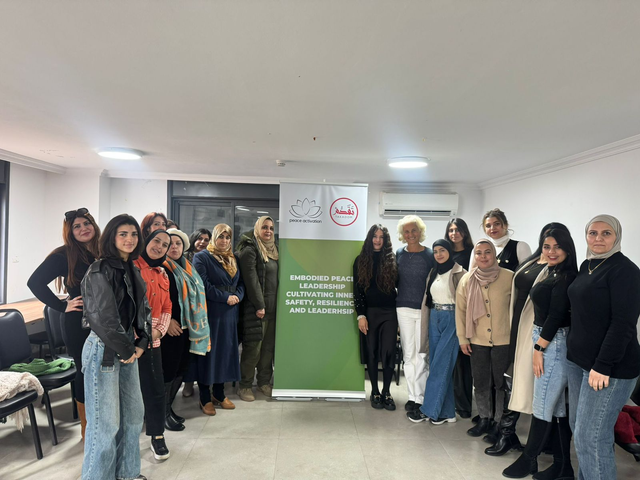

Cultivating Inner Safety, Resilience and Leadership
The Embodied Resilience and Leadership for Palestinian Women project reached 77 women across Ramallah, Bethlehem and Nablus.
The activity created supportive spaces for somatic-based healing, with a focus on nervous-system regulation, grounding and movement to restore emotional and physical well-being.
Resilience as a foundation for leadership
Through small-group reflection and collective practices, women rebuilt trust, processed shared grief and moral challenges and strengthened communal resilience.

The initiative also emphasized sustainability and burnout prevention, helping participants set boundaries while preparing to translate healing into leadership, peacebuilding and community action.
Empower people. Strengthen communities. Advance peace.